library(tidyverse)
library(openintro)Inference with mathematical models
Warm up
Announcements
- Last day to drop with a W is tomorrow!
Inference with mathematical models
That familiar shape…
Describe the shape of the distributions.
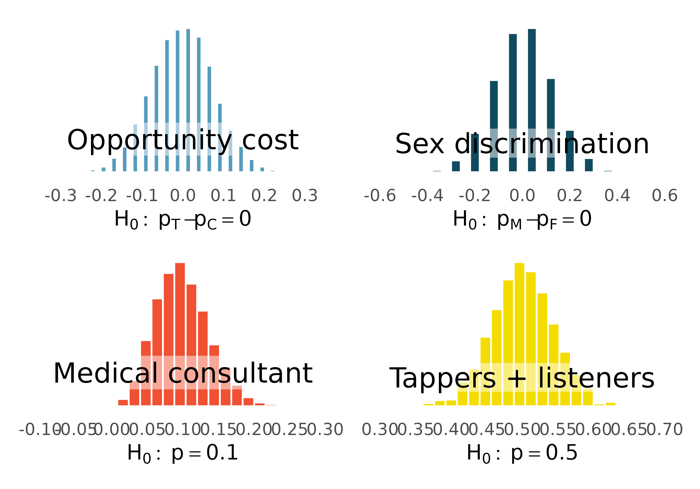
It’s not happenstance!
It’s the Central Limit Theorem (or CLT), which says that the distribution of the sample statistic is normal, if certain conditions are met.
Two questions:
- What do we mean by the distribution of the sample statistic?
- What conditions need to be met?
The distribution of the sample statistic
You can build the distribution of the sample statistic by repeatedly taking samples of size \(n\) (original sample size) from the population and calculating and recording the sample statistic for each of these samples.
But, you would never do this in reality!
You’d either use simulation (randomization, bootstrapping, stuff we’ve done so far!) or you would leverage mathematical theory to know what to expect if we had taken repeated samples.
The (technical) conditions
Independent observations: Observations in the sample are independent. Independence is guaranteed when we take a random sample from a population. Independence can also be guaranteed if we randomly divide individuals into treatment and control groups.
Large enough sample: The sample size cannot be too small. What qualifies as “small” differs from one context (i.e., from sample statistic to sample statistic).
Important
NOTE: if the population distribution is normal, the sampling distribution will be normal (can use CLT even if the sample size is small).
More to the CLT
There is more to the CLT than just the shape of the distribution – normal.
The CLT says that the center of the sampling distribution will be at the true population parameter.
The CLT also says something about the spread of the sampling distribution, measured by the standard error. For each sample statistic (\(\bar{x}\) – the sample mean, \(\hat{p}\) – the sample proportion, \(\bar{x}_1 - \bar{x}_2\) – the difference in sample means, etc.) the CLT provides a formula for its standard error.
You won’t be asked to memorize these formulas.
In fact, you’ll rarely use the CLT to calculate the variability of sample statistics, you’ll simulate their distributions directly.
CLT for proportions
If we look at a proportion (or difference in proportions) and the scenario satisfies certain conditions, then the sample proportion (or difference in proportions) will appear to follow a bell-shaped curve called the normal distribution.
CLT for means
Let \(x\) be the variable of interest. Suppose \(x\) follows a distribution with mean \(\mu\) and standard deviation is \(\sigma\). When certain criteria are satisfied, the sample mean \(\bar x\) of sample of size \(n\) is normally distributed. Specifically \[\bar x \sim N(\mu, \sigma/\sqrt{n}),\] i.e. \(\bar x\) is normally distributed with mean \(\mu\) and standard deviation \(\sigma/\sqrt{n}\). The standard deviation of the sampling distribution is called the standard error.
Normal distribution
Normal distributions
How are these normal distributions similar? How are they different? Which one is \(N(\mu = 0, \sigma = 1)\) and which \(N(\mu = 19, \sigma = 4)\)?
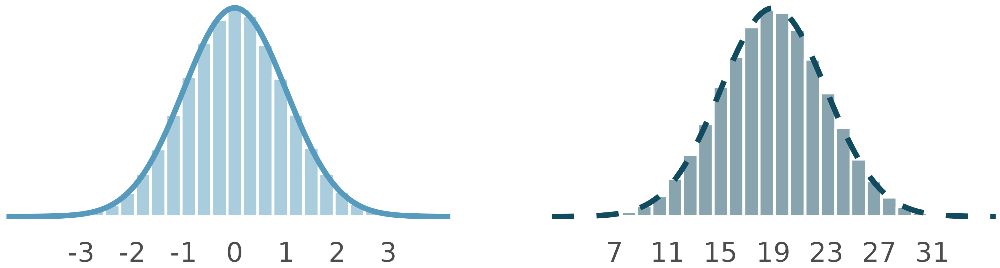
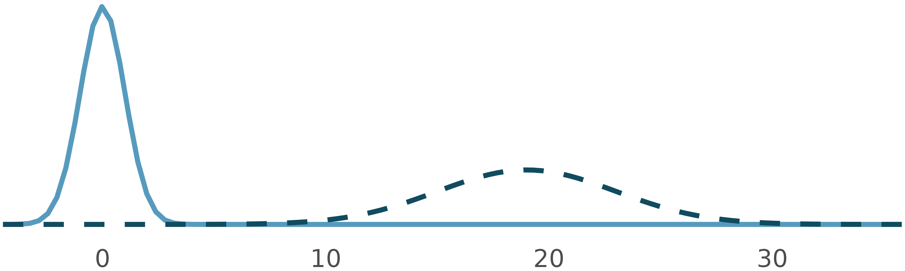
The 68-95-99.7 rule
The normal distribution is not just any unimodal and symmetric distribution, it follows the 68-95-99.7 rule.
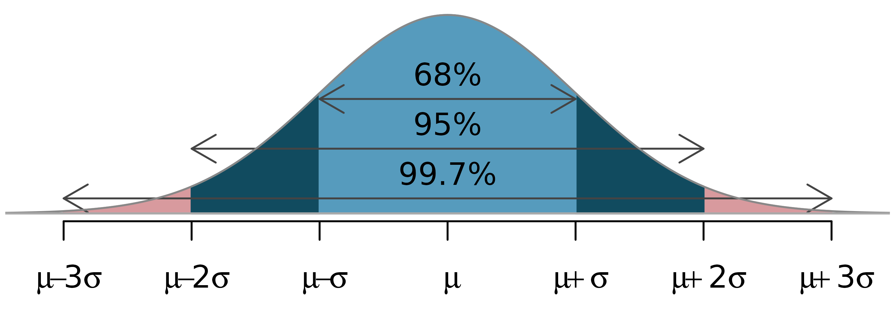
Using the normal distribution…
To make decisions \(\rightarrow\) hypothesis testing
- Use properties of the normal distribution to determine the probability of the observed sample statistic (or something more extreme, in the direction of the alternative hypothesis), i.e. the p-value
To make estimations \(\rightarrow\) confidence intervals
- Use properties of the normal distribution to calculate the bounds of the confidence interval, adding and subtracting a margin of error to the observed sample statistic
Goals
Calculate probabilities under the normal curve
Understand Z scores
Build intuition for hypothesis testing and confidence interval building with the normal distribution
Packages and data
We’ll use the tidyverse and openintro packages.
Bone density - population
Suppose the bone density for 65-year-old women is normally distributed with mean 809 \(mg/cm^3\) and standard deviation of 140 \(mg/cm^3\).
Let \(x\) be the bone density of 65-year-old women. We can write this distribution of \(x\) in mathematical notation as
\[ x \sim N(\mu = 809, \sigma = 140) \]
Let’s set the parameters of this distribution as objects you can use later.
bone_density_mean <- 809
bone_density_sd <- 140Exercise 1
Visualize the distribution of bone density of 65-year-old women.
# option 1: ggplot2
df <- tibble(x = c(bone_density_mean - bone_density_sd*3,
bone_density_mean + bone_density_sd*3))
ggplot(df, aes(x = x)) +
stat_function(
fun = dnorm,
args = list(mean = bone_density_mean,
sd = bone_density_sd))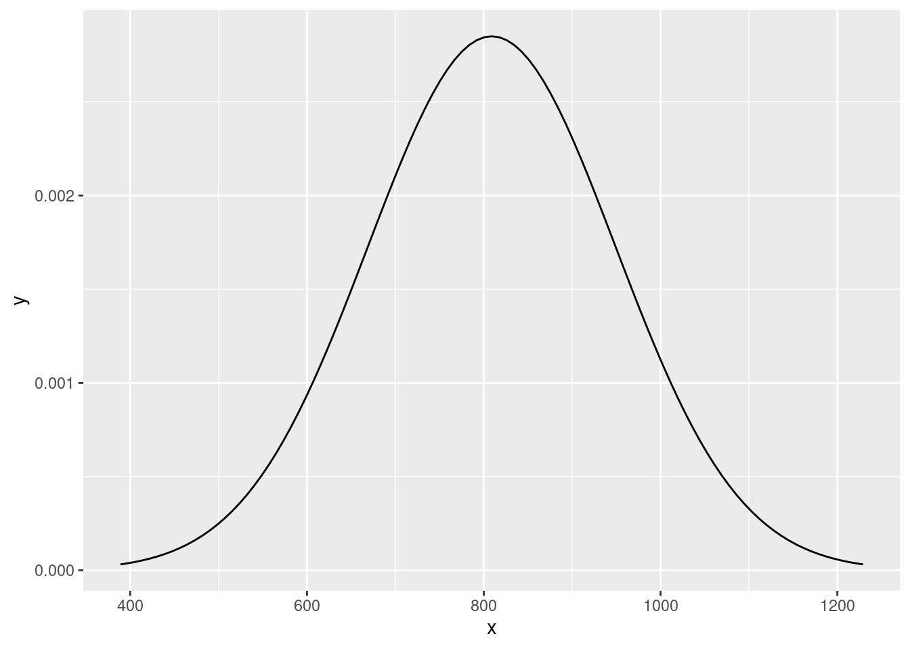
# option 2: openintro -- shortcut
normTail(m = bone_density_mean, s = bone_density_sd)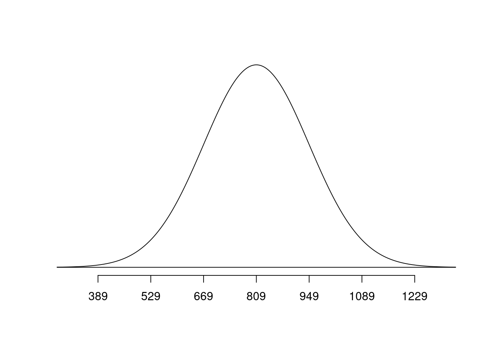
Exercise 2
Before typing any code, based on what you know about the normal distribution, what do you expect the median bone density to be?
\(809 mg/cm^3\) since the mean and median are equal for symmetric distributions.
Exercise 3
What bone densities correspond to Q1 (25th percentile), Q2 (50th percentile), and Q3 (the 75th percentile) of this distribution? Use the qnorm() function to calculate these values.
qnorm(p = 0.25, mean = bone_density_mean, sd = bone_density_sd)[1] 714.5714qnorm(p = 0.5, mean = bone_density_mean, sd = bone_density_sd)[1] 809qnorm(p = 0.75, mean = bone_density_mean, sd = bone_density_sd)[1] 903.4286809 - 714.5414[1] 94.4586903.4286 - 809[1] 94.4286Exercise 4
The densities of three woods are below:
Plywood: 540 \(mg/cm^3\)
Pine: 600 \(mg/cm^3\)
Mahogany: 710 \(mg/cm^3\)
Let’s set these as variables we can use later:
plywood <- 540
pine <- 600
mahogany <- 710What is the probability that a randomly selected 65-year-old woman has bones less dense than Pine?
normTail(m = bone_density_mean, s = bone_density_sd, L = pine)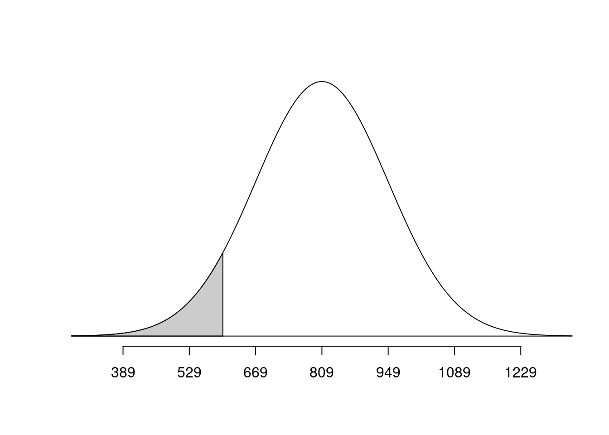
pnorm(q = pine, mean = bone_density_mean, sd = bone_density_sd)[1] 0.06773729Exercise 5
Would you be surprised if a randomly selected 65-year-old woman had bone density less than Mahogany? What if she had bone density less than Plywood? Use the respective probabilities to support your response.
Add response here.
normTail(m = bone_density_mean, s = bone_density_sd, L = mahogany)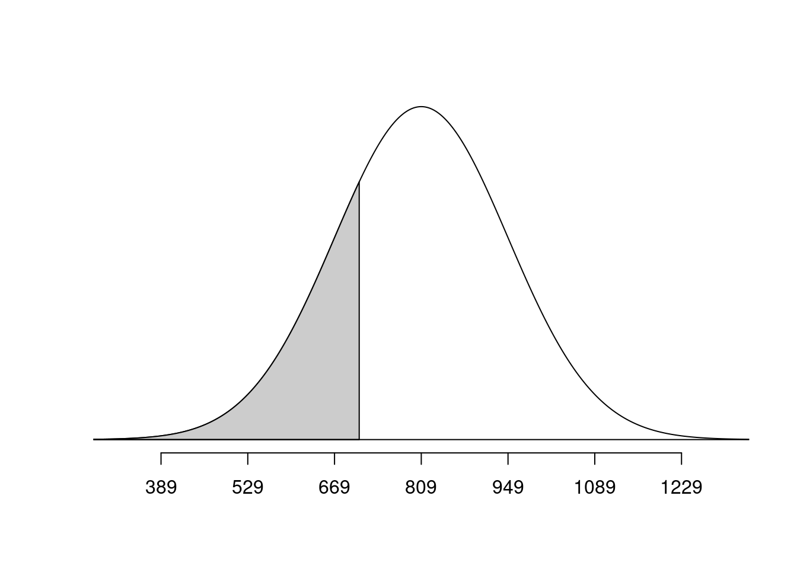
pnorm(q = mahogany, mean = bone_density_mean, sd = bone_density_sd)[1] 0.2397389normTail(m = bone_density_mean, s = bone_density_sd, L = plywood)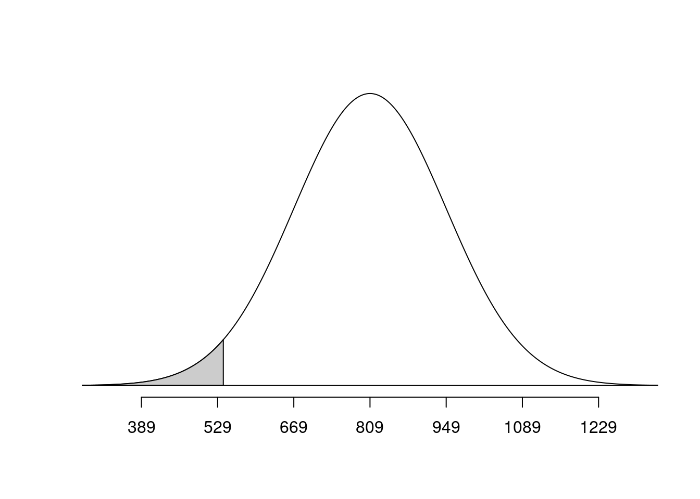
pnorm(q = plywood, mean = bone_density_mean, sd = bone_density_sd)[1] 0.02733885Bone density - sampling
Suppose you want to analyze the mean bone density for a group of 10 randomly selected 65-year-old women.
Exercise 6
Are the conditions for the Central Limit Theorem met?
Independence - yes because individuals are randomly selected
Sample size/ distribution: Yes, sample size is small, but the population distribution is normal, so the sampling distribution will be normal as well.
Exercise 7
What is the shape, center, and spread of the distribution of the mean bone density for a group of 10 randomly selected 65-year-old women?
Shape: bell curve, symmetric
Center: population mean: 809
Standard deviation: smaller than 140
\(\bar x \sim N(\mu = 809, SE = 140/\sqrt{10})\)
Exercise 8
What is the probability that the mean bone density for the group of 10 randomly-selected 65-year-old women is less dense than Pine?
bone_density_se = 140/sqrt(10)
normTail(m = bone_density_mean, s = bone_density_se, L = pine)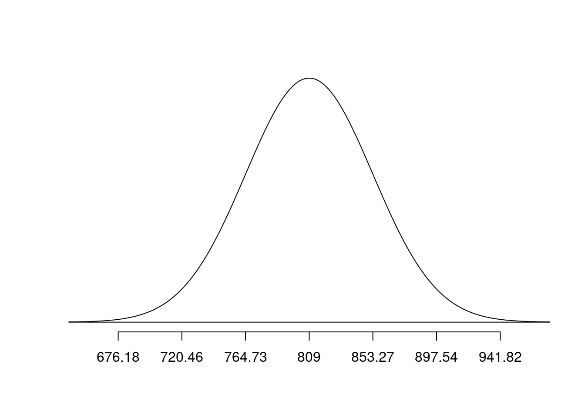
pnorm(q = pine, mean = bone_density_mean, sd = bone_density_se)[1] 1.174428e-06Exercise 9
Would you be surprised if a group of 10 randomly-selected 65-year old women had a mean bone density less than Mahogany? What the group had a mean bone density less than Plywood? Use the respective probabilities to support your response.
normTail(m = bone_density_mean, s = bone_density_se, L = mahogany)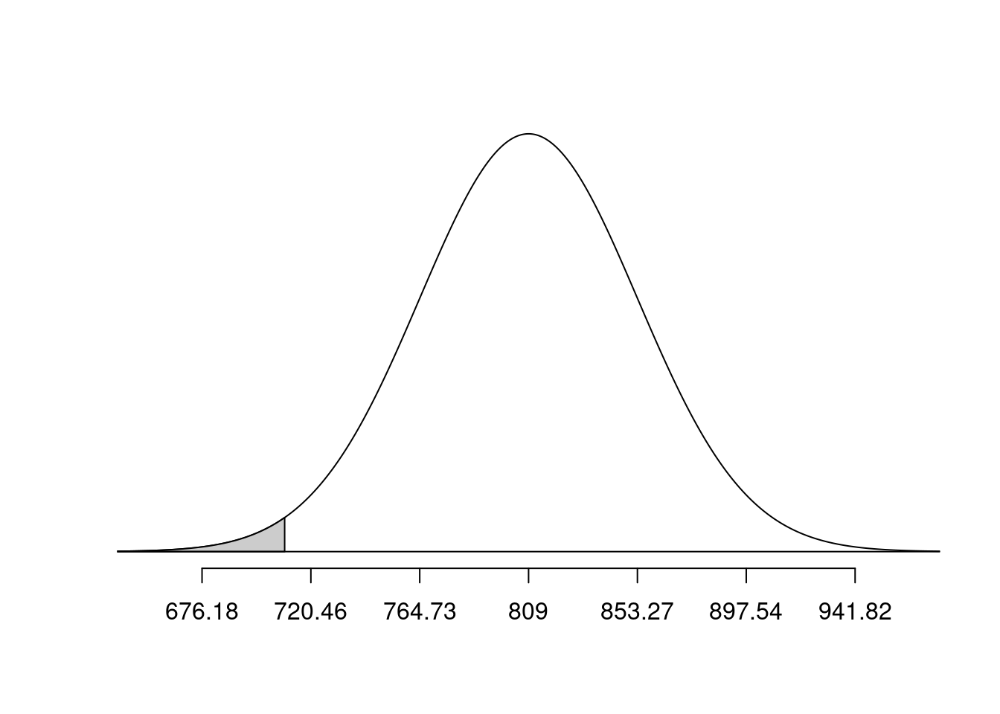
pnorm(q = mahogany, mean = bone_density_mean, sd = bone_density_se)[1] 0.01266992normTail(m = bone_density_mean, s = bone_density_se, L = plywood)
pnorm(q = plywood, mean = bone_density_mean, sd = bone_density_se)[1] 6.157391e-10Exercise 10
Explain how your answers differ in similar sounding earlier vs. later exercises.
Add response here.
ggplot(
data = tibble(x = c(bone_density_mean - bone_density_sd*3, bone_density_mean + bone_density_sd*3)),
aes(x = x)) +
stat_function(
fun = dnorm,
args = list(mean = bone_density_mean, sd = bone_density_sd)
) +
stat_function(
fun = dnorm,
args = list(mean = bone_density_mean, sd = 44),
linetype = "dashed",
color = "blue"
) +
geom_vline(
xintercept = c(plywood, pine, mahogany),
color = c("#deb887", "#01796f", "#c04000"),
linewidth = 1
) +
annotate(
geom = "label",
x = c(plywood, pine, mahogany),
y = c(0.006, 0.007, 0.008),
color = c("#deb887", "#01796f", "#c04000"),
label = c("plywood", "pine", "mahogany")
) +
annotate(
geom = "text",
x = 1000, y = 0.0018,
label = "Population\ndistribution",
hjust = 0,
fontface = "bold"
) +
annotate(
geom = "text",
x = 875, y = 0.005,
label = "Sampling\ndistribution",
hjust = 0,
fontface = "bold",
color = "blue"
)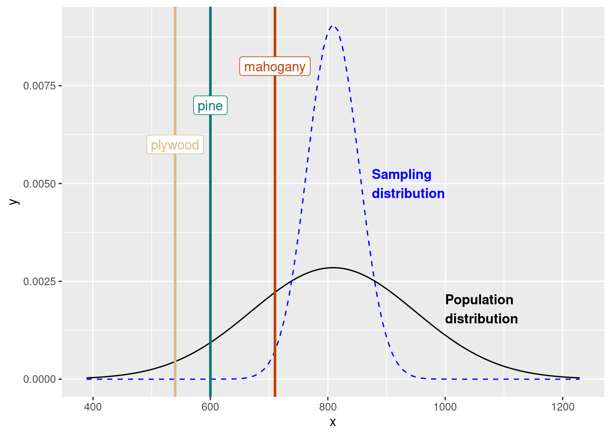